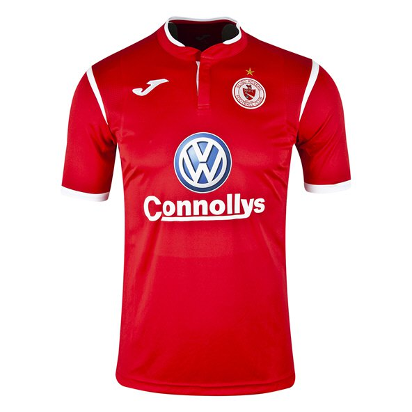

About the Team
Sligo Rovers Football Club was formed on 17 September 1928 as a result of an amalgamation of two junior sides, Sligo Town and Sligo Blues. Their first game was a 9-1 victory against Ballyshannon in Donegal on 23 September 1928 in the qualifying round of the Connacht Cup. The club, elected to the League of Ireland in 1934, hails from Sligo and play their home matches at the Showgrounds and have done ever since their inception. The home colours are red with white sleeve uppers, with white shorts and socks while the away colours are black with yellow sides, black shorts and yellow socks. The third alternative kit is navy with red sleeve uppers, navy shorts and navy socks with a red upper part.
Rovers have played at The Showgrounds since our inception. We recently won a third FAI Cup in four years and in the season previous to this recent cup win became the 2012 Premier Division Champions, winning the title with two games to spare. In total we have won three league titles, five FAI Cups and two League cups.